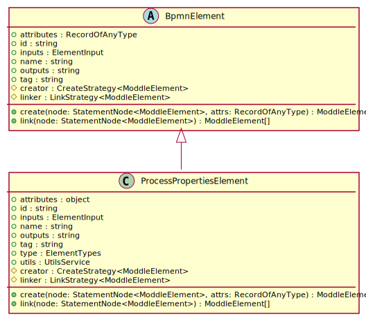

Hierarchy-Diagram
{kind=link}
Legend
 class
class
 abstract class
abstract class
 public property
public property
 protected property
protected property
 public method
public method
underlined
static property/method
Hierarchy
-
BpmnElement
- ProcessPropertiesElement
Index
Constructors
constructor
-
Parameters
-
creator: CreateStrategy<ModdleElement>
-
linker: LinkStrategy<ModdleElement>
-
utils: UtilsService
Returns ProcessPropertiesElement
-
Properties
attributes
Type declaration
Protected creator
Optional id
inputs
Protected linker
name
outputs
tag
utils
Static type
Methods
create
-
Parameters
-
node: StatementNode<ModdleElement>
The node to create the element for.
-
Optional attrs: RecordOfAnyType
Returns ModdleElement
The return value of the creator.execute method.
-
link
-
"The link function is a function that takes a node and returns a link node."
Parameters
-
node: StatementNode<ModdleElement>
The node to link.
Returns ModdleElement[]
The result of the linker's execute method.
-
It creates a new element for the current node, with the given attributes